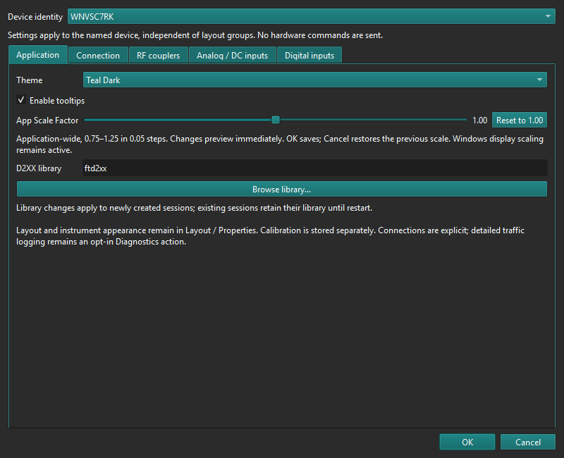
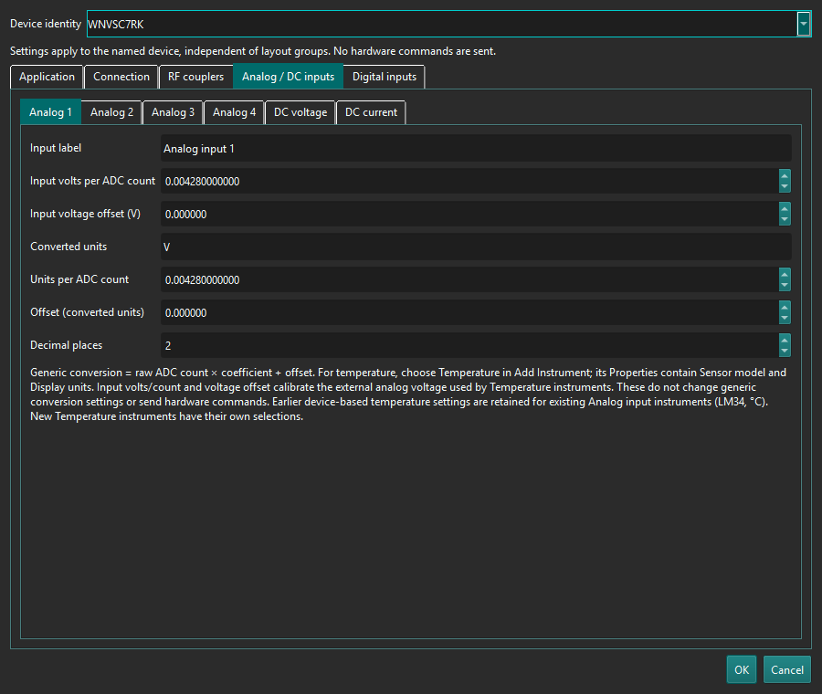
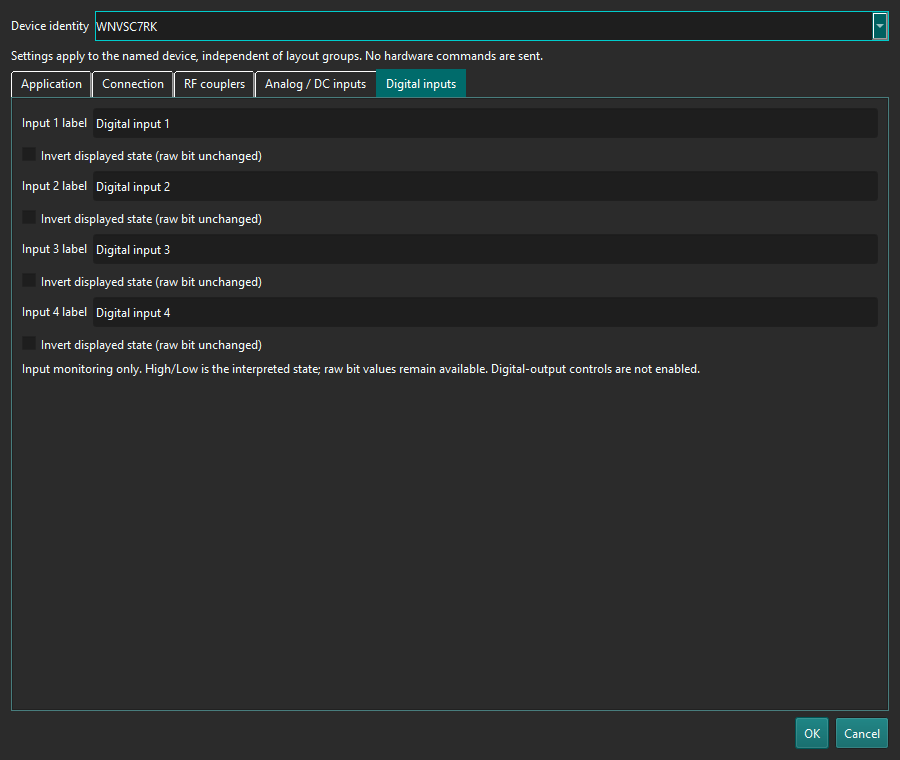

Device Settings: where to start
On this page
- Open Device Settings
- Application
- Connection
- RF couplers
- Analog / DC inputs
- Digital inputs
- Settings that have their own windows
Open Device Settings
- Select your WN-2 in the main window's device list.
- Choose Device → Settings.
- Check the device identity at the top of the Settings window. This matters when more than one WN-2 is connected.
- Choose the tab you need. Press OK to keep changes or Cancel to leave the previous settings. Instrument Properties is different: right-click an individual instrument to change its appearance, source or placement. Device Settings applies to the selected WN-2 and its inputs.
Application
Choose Theme and App Scale Factor. Scale changes are previewed as you move the slider; Cancel returns to the previous size. The normal D2XX setting is ftd2xx. Leave connection component settings unchanged unless the installation instructions or support staff direct you otherwise.
Enable tooltips in Device → Settings → Application shows short explanations when you pause the pointer over controls. It is ON by default. OK applies and remembers your choice throughout the application; Cancel leaves it unchanged. Remote Station controls explain certificate trust, pairing, startup reconnect and the difference between Disconnect and Forget.

Device → Settings → Application. Theme and scale affect the whole application. Select image to enlarge.

Connection
Connect last-used hardware at startup is ON by default and applies to this desktop. Connect a physical WN-2 once and wait for live readings; future launches reconnect the same serial number and transport. This setting is available even when no meter is discovered. Uncheck it to prevent startup hardware connections. Connect or Disconnect cancels startup waiting for the current launch. See Startup connection setup and behavior.
Automatically recover this WN-2 connection is a separate, per-device option, OFF by default. Enable it to recover from an unplugged cable or power cycle after the initial connection (manual or startup). Disconnect stops recovery. See Automatic recovery.

Device → Settings → Connection. Startup connection is app-wide; ongoing recovery is optional for each WN-2. Select image to enlarge.
RF couplers
OK saves software settings and authorizes changed coupler sensor families when connected. No extra sensor transaction is needed for unchanged or same-family selections. Disconnected, stale or busy changes remain pending. Use the optional retry checkbox only when you intend to authorize the displayed mapped selections again. Cancel sends nothing. See Coupler synchronization and feedback.
All nine current WaveNode model names are available, including HF-8KW. Rated ranges, frequency bands, family-mapping evidence and preserved historical names are explained in the coupler model table. Measurement processing selects the recommended three calculation policies together; existing saved calibration and Legacy choices remain available.
Select the coupler model fitted to each channel. RF couplers are factory calibrated and do not require additional calibration for normal use. Leave conversion values at their established values unless you have a specific reason to change them. Use the optional user reference-matching controls only when you want to match a chosen reference meter. This is not required to start using your WN-2. See Couplers and Reference matching.

Device → Settings → RF couplers. Match each channel to its connected coupler. Select image to enlarge.
Analog / DC inputs
Set useful labels and units for connected auxiliary sensors and DC measurements. Most operators can leave established conversion settings alone. If an external sensor requires a particular conversion, use its documented value. For an LM35 or LM34 temperature display, add a Temperature instrument. Sensor model and °C/°F display preference are selected in that instrument's Properties, not here.

Device → Settings → Analog / DC inputs. These are shared input settings. Select image to enlarge.

Digital inputs
Give each input a meaningful label and select inversion only when required by the connected equipment. Inversion changes how the input state is interpreted on screen.

Device → Settings → Digital inputs. Select image to enlarge.

Settings that have their own windows
Hardware LCD range, SWR protection and email rules are opened separately from the Device menu. Saving device preferences does not substitute for an Apply to device button in those windows. Read the window's status after applying a hardware setting.
Help home · RF StateSide · RayWn2App operator guide